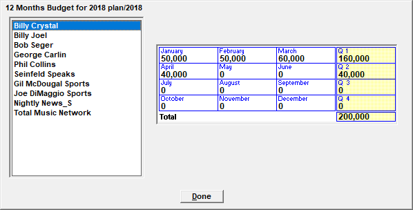
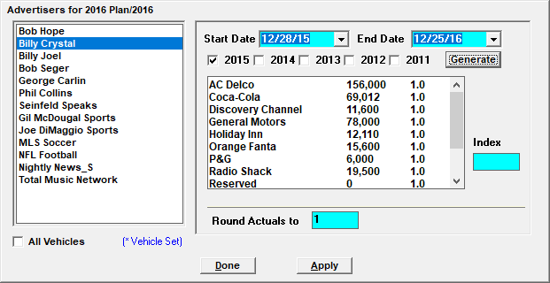
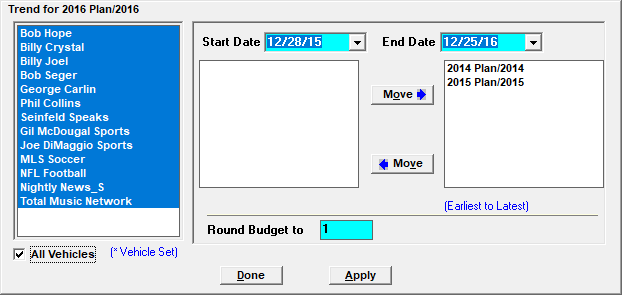
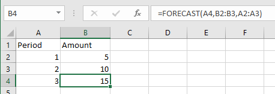
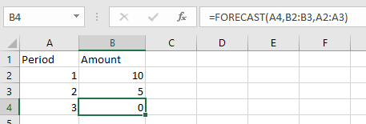
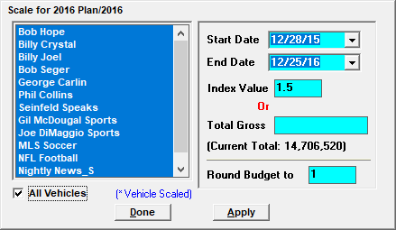
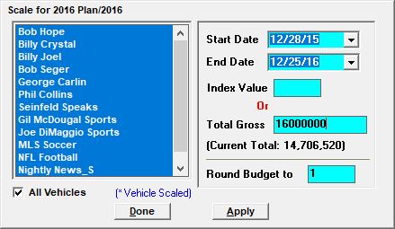
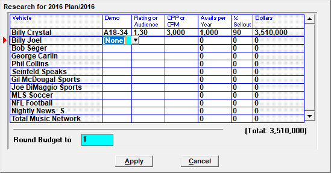
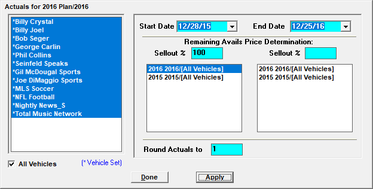

Budget Sub-screens
New budgets can be created and budgets can be modified using the Budget sub-screens, which are described below. Note that Actuals can only be used with the 12 Months screen, the Add Vehicle screen, and the Actuals screen.
Twelve Months
The “12 Mo’s” (Twelve Months) screen is used to manually enter, edit, or view figures on a monthly basis.

To use the Twelve Months screen to enter data:
- Select a vehicle on the left and enter the figures in the monthly boxes on the right. The vehicle totals for the quarter can be seen in the far right column, with the vehicle total for the entire year appearing below.
- When you tab past the field for December, the vehicle list will automatically advance to the next vehicle, so you can begin entering values for that vehicle, if you wish.
- Press Done when finished to return to the main Budgets screen. Press Save to save your changes.
Add Vehicle
Active vehicles are automatically added to the budget when creating a new budget. The “Add Veh” (Add Vehicle) screen gives you the ability to add any active vehicle to the selected budget, for example, because a new vehicle was added to the system after the budget was created.
To add a new vehicle to an existing budget:
- Press the Add Vehicle button.
- Select the vehicle from the list of vehicles that can be added to the budget.
- Press Done and then save the budget.
Advertiser
The “Advertiser” screen gathers all contracts for the selected year or years and creates budget figures for a new or existing budget based on those past contracts.

- The start and end date is used to select the dates that the new figures will be applicable to. This could be used to apply past figures to a selected period of the budget currently being edited.
- Years are selected by checking the year checkboxes (the first five years prior to the budget year are the years available to choose from). If more than one year is used, the total dollars for each past year are averaged by advertiser for the budget year.
- After selecting the vehicle or vehicles to use, and after selecting the date range and years to gather data from, press the Generate button to gather the data. This can be a lengthy process. When the data has been gathered, it will be shown by advertiser in the list box. The first number is the total per advertiser. The second number is the index value.
- The “Index” value field on the far right is used to increase or decrease the advertiser amount by selecting an advertiser and changing the index value. For example, to increase the amount an advertiser is expected to spend by 10%, click the advertiser, enter an index of 1.1, and then click Apply. After a vehicle has been scaled once, an asterisk will appear in front of its name. If it’s scaled again, another asterisk will appear, and so on.
- You can also select how closely you wish the totals to round to by entering a figure in the “Round Actuals to” field. The lowest number that can be entered is 1, which is the default. The smaller the number, the more accurate the calculations.
When finished, press Done on the Advertiser popup to apply the new values to the existing budget, and then press Save to save the changes.
Trend
The Trend screen allows you to create budget figures based on a trend computed by the system from two or more previous year’s actuals (or budgets). A trend calculation looks at amounts from one period to another for a range of time and makes a prediction. It is important to note that it is a trend and not an average.

The actuals (or budgets) to use are moved from the left side of the screen to the right side, typically in earliest to latest order, by pressing the Move button. The order in which you select the years is extremely important, as illustrated by the following example.
Trend Example: If the Actuals for period 1 totaled five, and the actuals for period 2 totaled ten, the predicted total for the current budget would be fifteen, as shown in the picture below from Excel, which uses the Forecast function to illustrate how the trend is calculated.

However, if period 1 and 2 were in reverse order, the predicted total for period 3 would be zero, as shown below.

After selecting the vehicles and dates, select the prior actuals years you wish to be included in the trend calculation by moving it from the left side of the screen to the right in the desired order.
When generating Trends, you may wish to run exclude a certain year that was exceptional, so the trend doesn’t get skewed by the exceptional year, although the more actual years that are selected, the more reliable the trend.
You may also select how closely you wish the totals to round by entering a number in the “Round Budget To” field. The lowest number that can be entered is 1, and the smaller the number, the more accurate the calculations.
Press the Apply button to generate the budget data based on the selected years, then press Done and then press Save on the main Budgets screen to save the changes.
Scale
The Scale screen can increase or decrease the dollar values of a budget within a selected date span for the selected vehicles.
To use the Scale feature, select the vehicles you wish to scale, then simply enter an index value or a total gross for the selected vehicles and press Apply. For example, if an index value of 1.5 is selected, the dollar amounts for each selected vehicle will scale accordingly, in this case, they will increase 50%.

When scaling by Total Gross, simply enter the new total gross you wish them to have, and click Apply.

The system will make the calculations automatically based on the percent increase/decrease from the current total gross to the new total gross.
After a vehicle has been scaled once, an asterisk will appear in front of its name.
You can also select how closely you wish the totals to round to by entering a figure in the Round Budget To field. The lowest number that can be entered is 1, which is the default. The smaller the number, the more accurate the calculations.
Press Done when finished and then save the edited budget.
Research
Research is used to enter vehicle budget amounts based on the primary demo using the amount of avails for the year and expected percent sellout for the selected vehicles.
To use the Research screen:
- For each vehicle, select the primary demo category.
- Enter the rating and CPP or the audience and CPM, the total number of avails for the entire year, and the expected percent sellout for the year in the corresponding cells.
- The total budget dollars will calculate automatically for each vehicle.

Press the Apply button to apply the new numbers to the budget, and then press Save to save the changed budget.
Actuals
Actuals is used to update a budget with actual values based on contracts in the system. It can be run multiple times in a single year to make the budget increasingly accurate as the year progresses. When generating actuals for a future period, you can project earnings for future weeks based on a selected rate card and the expected sellout for the remaining avails.

- The date selectivity allows you to run multiple passes and enter different sellout percentages using the Rate Card for the date spans you have defined.
- When you click Apply, the budget will be updated with actuals for the selected date span. Press Done and then Save on the Budgets screen to save the edited budget.
- Note that the dollars are broken out automatically by vehicle and office, and the office the dollars are distributed to is the office of the primary salesperson as entered on the order.